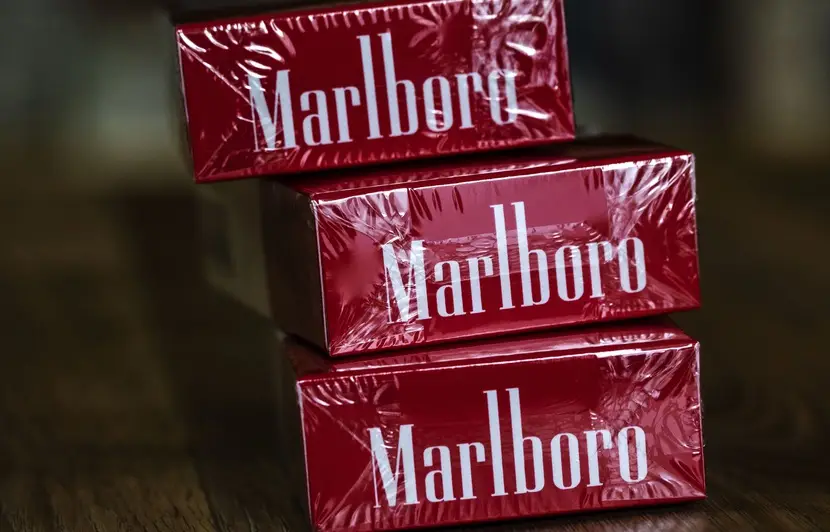
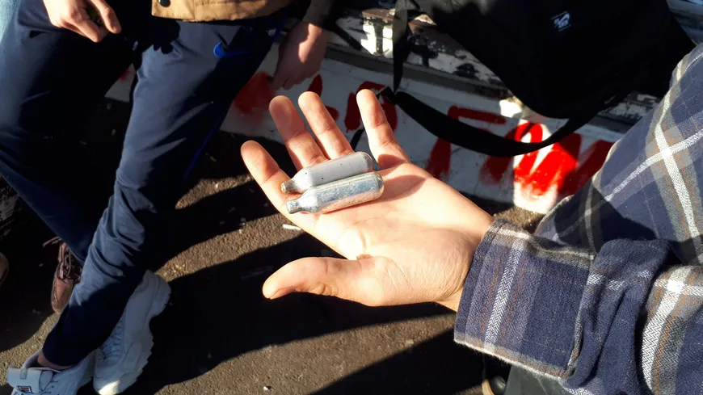
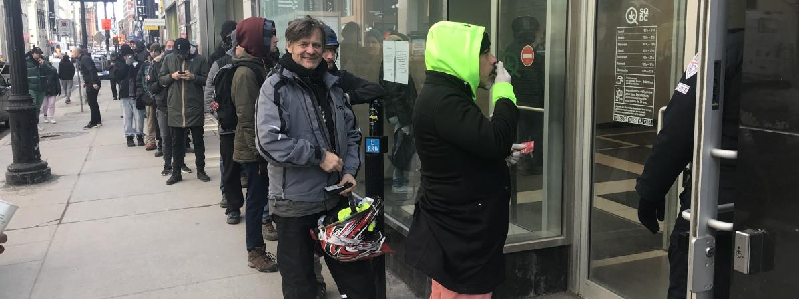

L’alcool, denrée de première nécessité en temps de coronavirus ? Si certains pays l’ont interdit, d’autres ont choisi de laisser ouverts les magasins spécialisés. Pour des raisons économiques, sanitaires ou parce qu’un « verre de vin peut aider » à supporter le confinement.
En période d’épidémie de coronavirus, l’alcool n’a pas le même traitement d’un pays à l’autre.
Contrairement à l’Afrique du Sud qui en a banni la vente,
de nombreux pays européens ou nord-américains ont autorisé les magasins spécialisés à rester ouverts au même titre que les commerces essentiels comme les supermarchés ou les pharmacies.
Au Canada, c’est également le cas des boutiques de cannabis, drogue douce légale depuis fin 2018.
Au Québec, le Premier ministre François Legault a justifié cette décision –
saluée par les consommateurs mais décriée par un syndicat inquiet des risques de contamination –
par le risque de chaos en cas de fermeture. Tout en ajoutant que parfois, un verre de vin peut aider à réduire le stress.
En effet certaine personne en manque car elles sont tres addicte a l'alcool , pourrais donner n'importe quoi pour obtenir leur taux d'alcool , pouvant les rendrent dangereux pour eux et pour les autres.

Le prix du tabac va augmenter au 1er mars pour atteindre les 10 euros/paquet.
Publié au Journal officiel mardi, un arrêté ministériel daté du 31 janvier fixe les nouveaux prix,
en hausse en raison de l'application du premier relèvement de taxes de 50 centimes, programmé cette année - le second étant prévu pour le 1er novembre par le gouvernement.
Le prix du paquet de Marlboro, la marque de cigarettes la plus vendue en France, atteindra la barre symbolique des dix euros le 1er mars.
La hausse des taxes a fait reculer les ventes et vise à réduire le tabagisme dans l'Hexagone.

La consommation est très répandue dans le quartier de la Paillade à Montpellier comme le confirme Bilal, lycéen : "Ce sont des petites capsules grises, on en voit partout dans la rue".
Une fois utilisées, les capsules sont jetées comme des mégots, il suffit de baisser la tête pour en voir au pied des arbres ou derrière les bancs.
Ces cartouches contiennent du protoxyde d'azote, un gaz hilarant anesthésiant utilisé en médecine. Pour les inhaler, les jeunes utilisent un siphon ou un ballon de baudruche.
"Tu aspires puis tu expires plusieurs fois de suite et ça monte à la tête. Tu as envie de rire et tu es défoncé pendant 30 secondes", explique cet adepte.
Les jeunes en parlent librement car il savent que tout ça est légal : ces capsules sont en vente libre dans les supermarchés et ne coûtent pas très cher
(un euro l'unité, moitié moins si vous les achetez en gros).
En Thaïlande, Piyawat Harikun, 17 ans, a été retrouvé mort devant son ordinateur après avoir passé la nuit à jouer à des jeux vidéo, selon le
Daily Mail . Il a succombé à un AVC.
En vacances scolaires depuis la fin du mois d'octobre, il passait tout son temps libre devant son ordinateur, enfermé dans sa chambre.
Selon les parents de l'adolescent, ce dernier pouvait rester toute la nuit éveillé à jouer.
Il tirait ensuite les rideaux au lever du jour pour continuer, passant des heures interminables devant l'écran.
Pour le nourrir, ils étaient obligés de lui apporter de la nourriture dans sa chambre, lui demandant d'arrêter ses sessions de jeu.
Mais rien à faire, le principal intéressé refusait d'obéir à ses parents.

Pour gérer leur stress face à l'épidémie de coronavirus, supporter une quarantaine ou faire des stocks de crainte d'une pénurie,
Canadiens et touristes se ruent depuis plusieurs jours sur les magasins et les sites de vente de cannabis.
Le Canada a légalisé la vente de cannabis récréatif le 17 octobre 2018, devenant ainsi le second pays au monde à le faire, cinq ans après l'Uruguay.
Devant la boutique de la Société québécoise du cannabis (SQDC) de la rue Sainte-Catherine, principale artère commerciale de Montréal, la file d'attente s'allonge avant même l'ouverture.
"On a décidé de se mettre en quarantaine, on va juste chercher de la 'weed' pour les quinze jours", dit Maureen Duflot, 28 ans.
Elle est arrivée la veille au soir avec son conjoint de Paris sur le dernier vol avant la fermeture de la frontière canadienne.
Les autorités canadiennes ont appelé les voyageurs revenant de l'étranger à s'isoler volontairement pendant deux semaines.